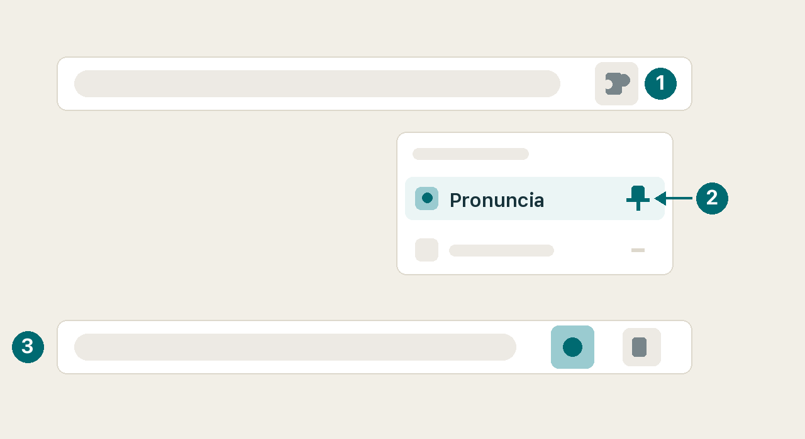
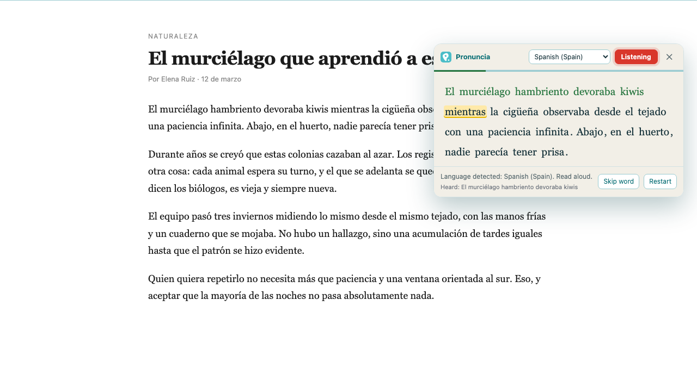
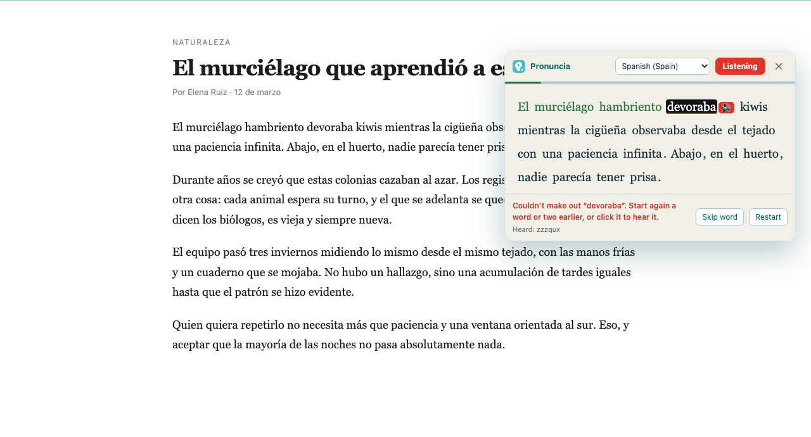

Ya está. Así se usa.
Pronuncia no se abre sola. Tú la llamas sobre el texto que quieres leer.
Primero, áncla la extensión
Chrome esconde las extensiones nuevas detrás del icono de la pieza de puzle. Ancla Pronuncia y se queda al lado de la barra de direcciones, a mano.

Pruébala ahora mismo
- Selecciona un párrafo en cualquier página. Este mismo vale.
- Clic derecho y «Practicar lectura con este texto», o pulsa Ctrl+Mayús+L (⌘+Mayús+L en un Mac).
- Léelo en voz alta. Chrome te pedirá el micrófono la primera vez.
Qué vas a ver
La palabra que toca va resaltada en amarillo. Pronúnciala con claridad y se pone verde, y el resaltado pasa a la siguiente. El texto no avanza hasta que la dices bien: esa es toda la idea.

Cuando falles una
Se para ahí. La palabra se marca en negro y aparece un botón de altavoz al lado: púlsalo para oír cómo suena, repítela y sigue. Abajo, en «Oí:», ves lo que entendió de verdad el reconocedor, que suele ser donde está la sorpresa.

Si te resulta demasiado exigente
Abre el icono de la extensión y mueve la exigencia hacia tolerante. Un acento marcado no es un error, y el reconocedor acierta menos con nombres propios y tecnicismos que con palabras corrientes. Date margen mientras empiezas.
Dos cosas que conviene saber
Funciona en seis idiomas —español, inglés, portugués, francés, italiano y alemán— y detecta solo en cuál está el texto.
Usa el reconocimiento de voz de Chrome, que manda el audio a los servidores de Google, igual que cualquier web con dictado. Lo decimos sin rodeos en la política de privacidad. Necesitas micrófono y conexión.